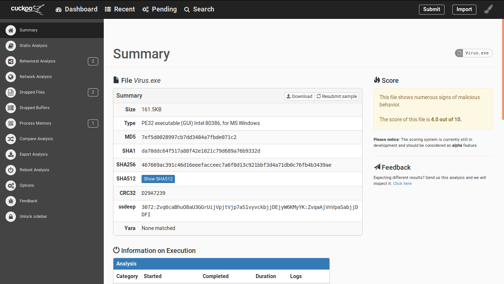
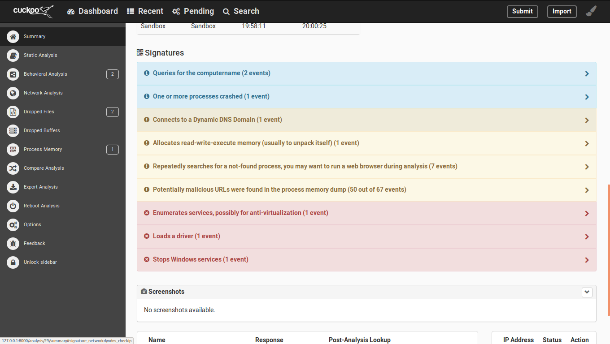
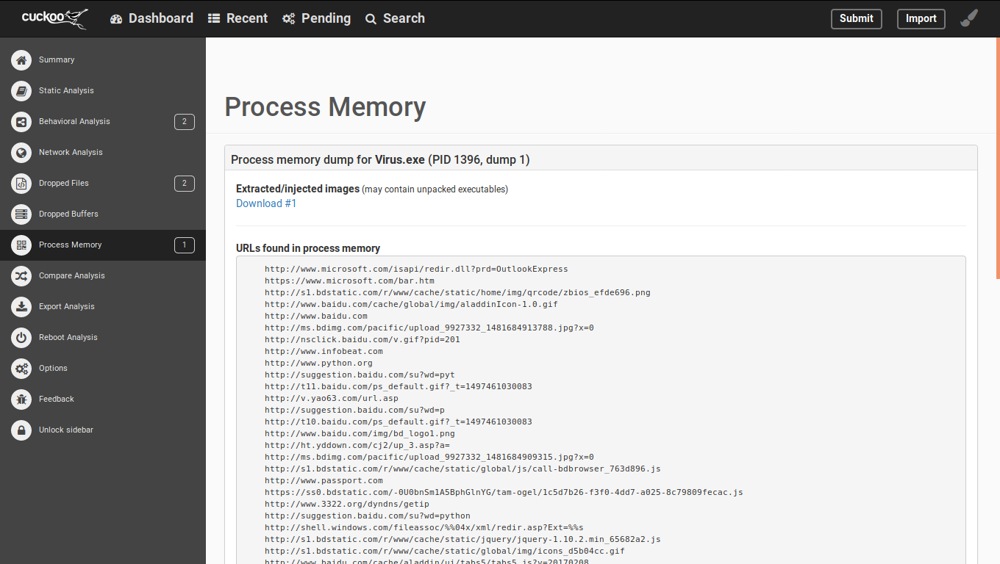
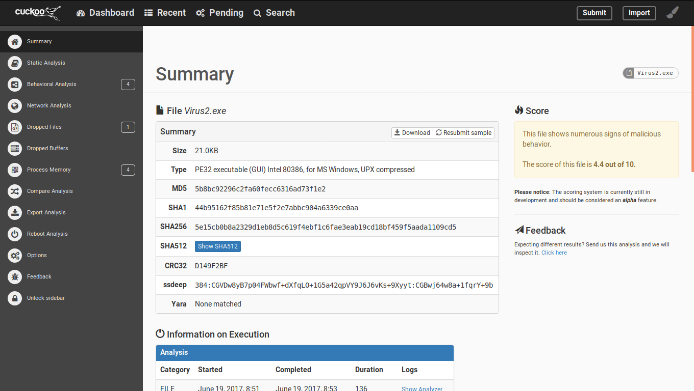
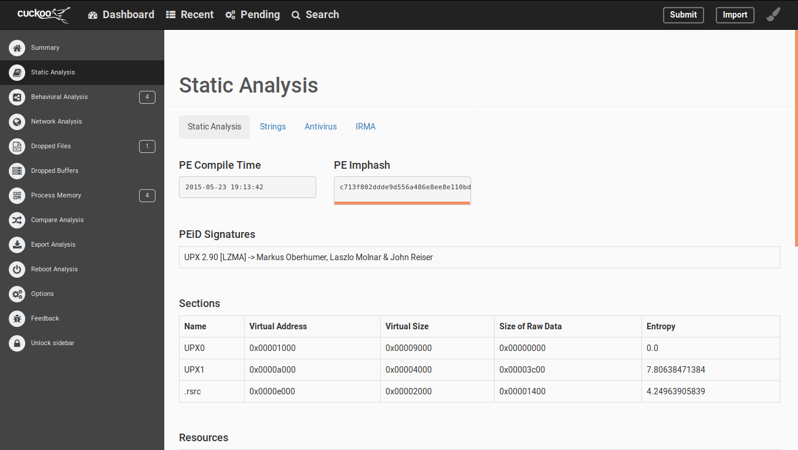

Author：wnagzihxa1n
Mail：tudouboom@163.com
上一篇文章分享了如何搭建一个能跑的环境，但是后面发现效果不太好
在运行时发现日志输出，因为这个问题并不影响跑环境，所以当时并没有去解决
2017-06-16 17:30:24,405 [cuckoo.core.startup] WARNING: Unable to import yara (install with `pip install yara-python==3.5.0`)
然而这个是很重要的规则库，没了这个啥都检测不出来，所以这篇文章需要解决的就是这个问题
首先我们尝试使用Python导入这个库，发现报错，那么就大概明白了为什么Cuckoo无法import这个库了
wnagzihxa1n@toT0C:~$ python
Python 2.7.12+ (default, Sep 17 2016, 12:08:02)
[GCC 6.2.0 20160914] on linux2
Type "help", "copyright", "credits" or "license" for more information.
>>> import yara
Traceback (most recent call last):
File "<stdin>", line 1, in <module>
ImportError: /usr/lib/python2.7/dist-packages/yara.x86_64-linux-gnu.so: undefined symbol: yr_finalize
又尝试编译了一遍，发现还是同样的错，于是翻官网
发现其实是可以直接安装的
$ pip install yara-python
那么就开始卸载原先安装的版本
wnagzihxa1n@toT0C:~$ sudo pip uninstall yara-python
The directory '/home/wnagzihxa1n/.cache/pip/http' or its parent directory is not owned by the current user and the cache has been disabled. Please check the permissions and owner of that directory. If executing pip with sudo, you may want sudo's -H flag.
Uninstalling yara-python-3.5.0:
/usr/lib/python2.7/dist-packages/yara_python-3.5.0.egg-info
Proceed (y/n)? y
Successfully uninstalled yara-python-3.5.0
The directory '/home/wnagzihxa1n/.cache/pip/http' or its parent directory is not owned by the current user and the cache has been disabled. Please check the permissions and owner of that directory. If executing pip with sudo, you may want sudo's -H flag.
删除原先下载的yara文件夹
wnagzihxa1n@toT0C:~$ cd /opt
wnagzihxa1n@toT0C:/opt$ ls
click.ubuntu.com cuckoo pydeep shares yara
wnagzihxa1n@toT0C:/opt$ sudo rm -rf yara
开始重新安装，网络问题这里可能会一直断开，多尝试几遍即可
wnagzihxa1n@toT0C:/opt$ sudo pip install yara-python
The directory '/home/wnagzihxa1n/.cache/pip/http' or its parent directory is not owned by the current user and the cache has been disabled. Please check the permissions and owner of that directory. If executing pip with sudo, you may want sudo's -H flag.
The directory '/home/wnagzihxa1n/.cache/pip' or its parent directory is not owned by the current user and caching wheels has been disabled. check the permissions and owner of that directory. If executing pip with sudo, you may want sudo's -H flag.
Collecting yara-python
Downloading yara-python-3.6.1.tar.gz (297kB)
100% |████████████████████████████████| 307kB 479kB/s
Installing collected packages: yara-python
Running setup.py install for yara-python ... done
Successfully installed yara-python-3.6.1
安装成功后，重新启动Cuckoo，没有报错
从吾爱破解上面下载了两个样本，分别命名为Virus.exe和Virus2.exe
整体的判断，可以看到分数是4.0

比较敏感的行为

行为分析
网络行为

释放出的文件，提供下载的功能，如果一个样本释放出文件后删除，这是个非常好的辅助功能

进程的内存数据，一些运行时解密的字符串什么的都会显示出来

因为样本的运行很大程度取决于环境，即使是同样的环境也不一定每次都是相同的结果，所以我决定重新分析一遍
有意思的来了，注意分数，4.8，而上一次是4.0

敏感行为也多了一项

来分析一波第二个样本
大概的分数范围是对的

检测到了这是加壳的，同时给出了加的壳版本

最后放一张很有意思的图，注意最上面，同一个样本每次分数都不一样，这个很正常，不一定每次的行为都一样，但是中间那个0我就不是很能理解了

昨天在做完iptables的设置后，其实应该还有一步保存的操作
打开/etc/network/interfaces，添加下面的语句
pre-up iptables-restore < /etc/iptables.rules
post-down iptables-save > /etc/iptables.rules
在测试的过程中，我发现虚拟机ping不到百度，后来我发现iptables的设置失效了，上面用于保存的语句完全没有起到作用，所以又设置了一遍，切换到了su用户进行设置的
wnagzihxa1n@toT0C:~$ su
Password:
root@toT0C:/home/wnagzihxa1n# iptables -A FORWARD -o enp0s25 -i vboxnet0 -s 192.168.56.0/24 -m conntrack --ctstate NEW -j ACCEPT
root@toT0C:/home/wnagzihxa1n# iptables -A FORWARD -m conntrack --ctstate ESTABLISHED,RELATED -j ACCEPT
root@toT0C:/home/wnagzihxa1n# iptables -A POSTROUTING -t nat -j MASQUERADE
root@toT0C:/home/wnagzihxa1n# sysctl -w net.ipv4.ip_forward=1
net.ipv4.ip_forward = 1
然而重启后发现依旧啥都没了
有待解决，有待解决
不过现在已经能够实现一个很简单的本地沙箱了，但是只是测试了PE文件，还有其它文件未做测试，目前yara库能导入那么后面的问题就不大了
后来又测了一下安卓的病毒，日志报了一个错，看起来是分析APK的环境没搭建好导致运行不起来
接下来就是要读源码了